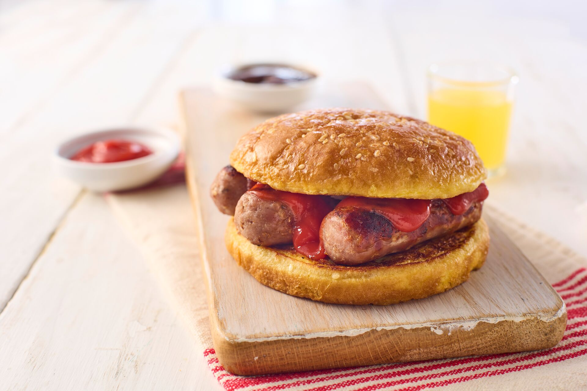

Sausage Bap

Sausage Bap with sauce!
A cracking Sausage bap!
Ingredients
- Bread roll or 2 slices of bread
- Butter
- Sauce like ketchup or HP Brown
Method
- Pre-heat oven to 200 degress (Refer to packaging for specific temperture).
- Place 3 sausage's in the oven (3 per person).
- Turn the sausage over half way through (10mins or so, refer to packing for specific times).
- While the sausages are cooking, grab a roll or 2 pieces of bread and butter both sides
- The sausages should be golden brown after 20mins then take them out of the oven.
- Make sure to cut one in half to make sure there is no pink meat left, if there is place back in over for another 5-10mins.
- Place 3 sausges on the buttered bap or bread slices, add a slice of chedder cheese for extra flavour, add sauce like ketchup or HP Brown
- Enjoy!